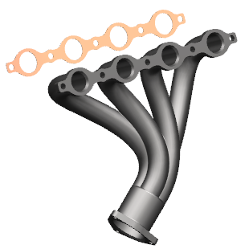
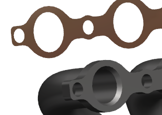
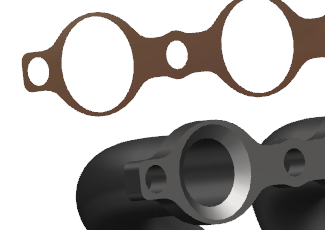

对于这个练习的目的，为了更好地查看集管变化对垫片的影响，可以将垫片作为一个组件添加到集管中。
将 wav3_header 设为工作部件。
将垫片作为一个组件添加到集管中。不要将垫片放到集管的配合面上，以便您可以同时看到两个部件的变化。

在部件导航器中，选择草图 (1)。
在细节面板中，将表达式 Bolt_Hole的值更改为15。
集管与垫片中的螺栓孔都将更新。

在部件导航器中，选择倒斜角 (44)。
在细节面板中，将表达式 Chamfer_Offset_1 的值更改为7。
您可以看到集管变化对垫片的影响，这些编辑不受垫片位置的影响，因为垫片中链接的面是一个与位置无关的链接特制。

关闭所有部件。